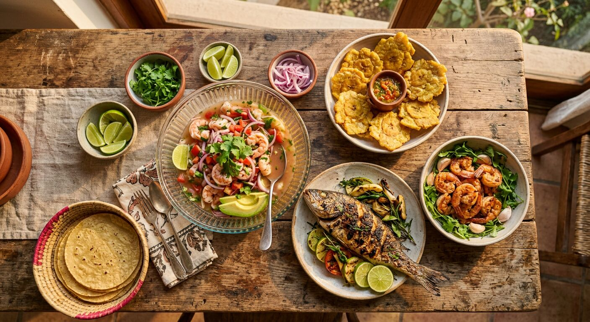
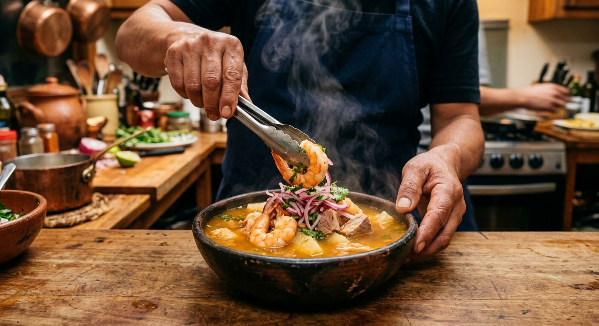

Cocina del Pacífico · Desde 2009
Del mar a tu mesa, el mismo día.
Ceviches, encebollado y arroces marineros preparados con pesca fresca de la costa ecuatoriana, a pasos del Malecón.
- 4.8 ★ 1.200+ reseñas
- Martes a domingo almuerzo y cena


Nuestra historia
Tres generaciones cocinando el sabor del Pacífico
El Muelle nació como un pequeño puesto de ceviches en el Malecón. Hoy seguimos con las mismas recetas de la abuela Rosa y con la misma regla: si no llegó fresco esta mañana, no se sirve.
Trabajamos directo con pescadores artesanales de Posorja y Playas para garantizar calidad y precios justos.
- 100%Pesca fresca diaria
- 15Años en Guayaquil
- 80Comensales por turno
Reservas
Separa tu mesa
Recomendamos reservar para fines de semana y grupos de más de 6 personas. Confirmamos tu reserva por WhatsApp.
Horario
- Martes a jueves
- 11:00 – 21:00
- Viernes y sábado
- 11:00 – 22:30
- Domingo
- 10:00 – 18:00
- Lunes
- Cerrado
¡Reserva recibida!
Gracias por elegirnos. Te escribiremos para confirmar tu mesa en los próximos minutos.
Ubicación
Encuéntranos junto al río
Malecón Simón Bolívar y Calle LojaLocal 12, frente al muelle de cruceros
Guayaquil, Ecuador
Parqueo en el Malecón 2000 (entrada por Av. Olmedo). A 5 minutos caminando del Barrio Las Peñas.
Cómo llegarRío Guayas